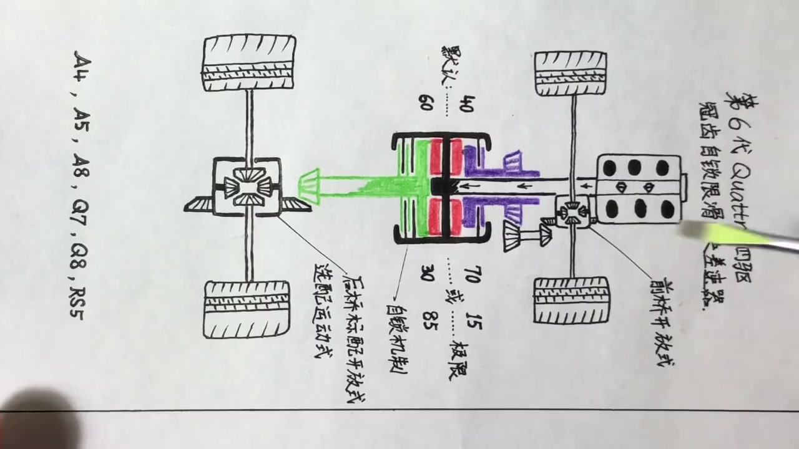
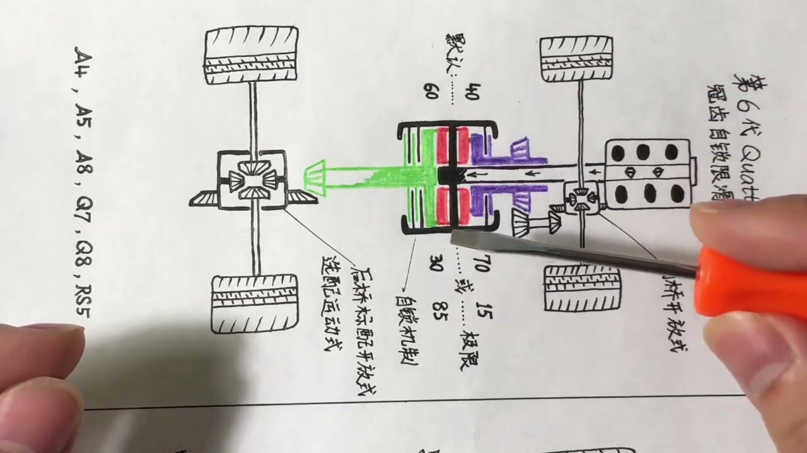
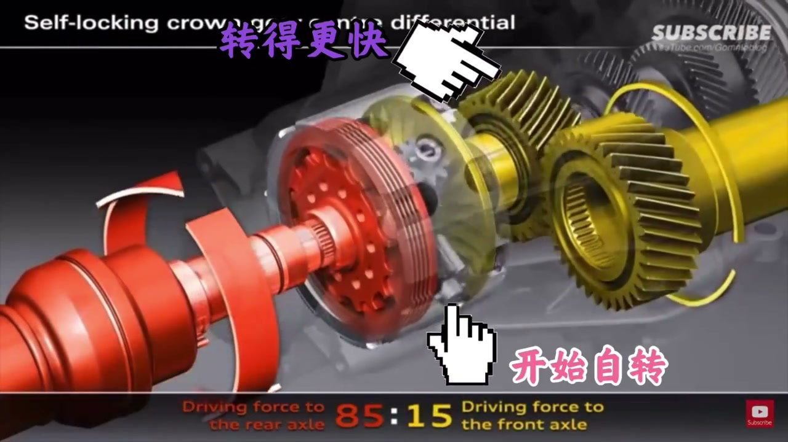
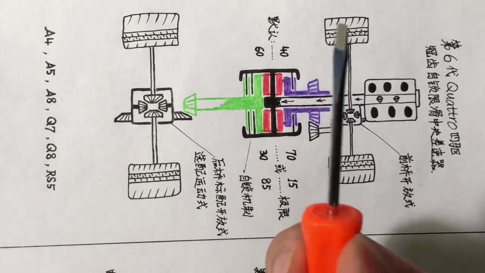
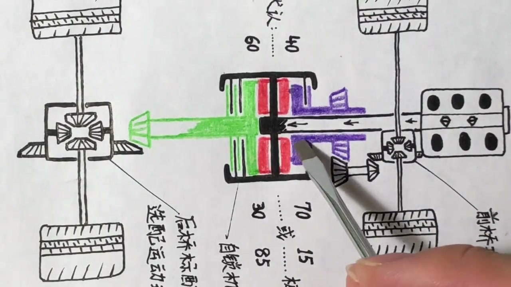

01
中文
Quattro其实是奥迪对自家四驱的一个叫法，它也是一个商标。
EN
Quattro is Audi's name for its own AWD—and also a trademark.
表达提示trademark（商标）

Scene English · 汽车 · 四驱系统
Audi Quattro (1): The Self-Locking Crown-Gear Center Diff
🎧 语音讲解
Quattro Is a Trademark, Not One System
情境Quattro是奥迪对它自家四驱的叫法，也是一个商标。奥迪不同车型上有四套不同的Quattro系统：纵置发动机上的Quattro和Quattro ultra、横置发动机上的Haldex、电动车上的e-Quattro。
Quattro其实是奥迪对自家四驱的一个叫法，它也是一个商标。
Quattro is Audi's name for its own AWD—and also a trademark.
表达提示trademark（商标）
它并不是特指某一种四驱形式。
It doesn't refer to any single AWD layout.
表达提示layout（形式）
今天讲纵置发动机上的三种最常见的Quattro，看看它们分别怎么工作。
Today we cover the three most common longitudinal Quattro systems.
表达提示longitudinal（纵置的）
trademark（商标
layout（形式

Gen 6: The Self-Locking Crown-Gear Diff
情境第一种Quattro被认为是正宗的标准Quattro，已出到第六代。前五代基于托森中央差速器，第六代改用奥迪自研的冠齿自锁式限滑中央差速器，只用于纵置发动机车型。
第一种Quattro被普遍认为是最正宗的Quattro，到今天已经出到第六代了。
The first Quattro is widely seen as the genuine one—now in its sixth generation.
表达提示genuine（正宗的）
前五代基本以托森中央差速器为基础，第六代用了奥迪自研的冠齿自锁式限滑中央差速器。
The first five were Torsen-based; Gen 6 uses Audi's self-locking crown-gear diff.
表达提示Torsen（托森差速器）
这套系统只针对纵置发动机车型，横置发动机用不了。
It's for longitudinal-engine cars only; transverse cars can't use it.
表达提示transverse（横置的）
genuine（正宗的
Torsen（托森差速器

Inside the Crown-Gear Differential
情境动力经变速箱输入轴传入黑色壳体（直接相连一起转），壳体上有四个红色小齿轮，分别咬合紫色（前）和绿色（后）两个冠齿齿轮。正常行驶时红色齿轮只公转不自转。
整个黑色的壳体直接和变速箱输入轴硬性连接，所有黑色部分都跟着一起转。
The black housing is rigidly linked to the gearbox input—all of it spins together.
表达提示housing（壳体）
四个红色的齿轮固定在黑色柱子上，分别咬合前后两个冠齿齿轮。
Four red pinions mesh with a front and a rear crown gear.
表达提示pinion（小齿轮）
前后轮都有抓地力时，红色齿轮只随壳体公转，本身不自转。
With all wheels gripping, the red pinions orbit but don't spin themselves.
表达提示orbit（公转）
housing（壳体
pinion（小齿轮

Front Slip: The Diff Self-Locks
情境前轮打滑时紫色冠齿齿轮转得更快，红色齿轮开始自转。其特殊几何齿形对绿色冠齿齿轮产生轴向推力，把壳体上的离合片和绿色冠齿齿轮上的离合片压在一起，形成硬性连接，将更多动力传到后轴。
前轮一打滑，紫色的冠齿齿轮就转得更快，红色的齿轮开始一边公转一边自转。
When the front slips, the purple crown gear spins faster and the red pinions start self-rotating.
表达提示self-rotate（自转）
红色齿轮的特殊几何齿形会给绿色冠齿齿轮一个轴向的推力。
The red pinion's special tooth geometry pushes the green crown gear axially.
表达提示axially（轴向地）
壳体上的离合片和绿色冠齿齿轮上的离合片被压到一起，整个就锁定了。
The housing's clutch plates are pressed against the crown gear's, locking the assembly.
表达提示clutch plates（离合片）
整个过程完全机械、自发，不涉及任何液压或电子控制。
It's purely mechanical and self-acting—no hydraulics or electronics.
表达提示mechanical（机械的）
self-rotate（自转
axially（轴向地

Rear Slip: The Mirror Case
情境后桥打滑时绿色冠齿齿轮转得更快，红色齿轮以相反方向自转，对紫色部分产生向外推的力，离合片锁死，更多动力被传到前轴。
后桥打滑时，绿色的冠齿齿轮会转得更快。
When the rear slips, the green crown gear spins faster.
表达提示rear axle（后桥）
红色的齿轮以刚才相反的方向自转，对紫色的部分产生向外推的力。
The red pinions self-rotate the other way, pushing the purple crown gear outward.
表达提示outward（向外）
离合片锁死，更多动力被传到前轴。
The clutches lock and more torque flows to the front axle.
表达提示torque（扭矩）
rear axle（后桥
outward（向外

Torque Split by Lever Arm
情境正常情况下前后动力分配是40:60，打滑时最高可到前70后30或前15后85。达不到100:0是因为离合片锁定有物理极限。默认40:60是通过红色齿轮与前后冠齿齿轮连接点的力臂比例4:6实现的纯物理设计。
正常时动力分配是前40后60，打滑时最高可达前70后30或前15后85。
Normally the split is 40/60; during slip it can reach 70/30 or 15/85.
表达提示split（分配）
为什么达不到100:0？因为离合片之间互相锁死有它的物理极限。
Why never 100/0? The clutch plates have a physical locking limit.
表达提示physical limit（物理极限）
默认的40:60是靠红色齿轮与两个冠齿齿轮连接点的力臂比例4比6，纯物理实现的。
The default 40/60 comes from a 4:6 lever-arm ratio—pure geometry.
表达提示lever arm（力臂）
split（分配
physical limit（物理极限

The Three Torque Splits
情境四驱就是动力的三个分流：前后分流靠中央差速器，前轮左右分流靠前桥开放式差速器，后轮左右分流靠后桥开放式差速器。运动车型可选配带离合片组的运动后差速器实现左右动力分配。
四驱简化来讲就是动力的三个分流：对前对后、前桥左右、后桥左右。
AWD is three torque splits: front/rear, and left/right at each axle.
表达提示torque split（动力分流）
前桥和后桥都是开放式差速器，这是比较令人遗憾的。
Both axle diffs are open-type, which is a pity.
表达提示open differential（开放式差速器）
运动车型可选配运动后差速器，多给两组离合片实现左右动力分配。
Sport models can spec a sport rear diff with extra clutch packs.
表达提示sport diff（运动差速器）
torque split（动力分流
open differential（开放式差速器

Three Wins Over the Torsen
情境冠齿系统优点：四轮永远有动力；对比托森式三大优势——更轻2kg、动力分配更自由且不受打滑程度限制、能更好整合全车电子系统。缺点是：动力分配是打滑后被动调整，无法主动控制；前后差速器完全开放。
它最大的优点就是前后轮永远有动力，不像有些四驱只在打滑时才给另一桥输送动力。
Its biggest plus: all four wheels always have power, unlike systems that only engage on slip.
表达提示always on（常时四驱）
对比托森有三大优势：更轻、分配更自由、能更好整合全车电子系统。
Versus Torsen: lighter, freer torque split, and better integration with vehicle electronics.
表达提示integration（整合）
缺点是分配动力比较被动，要等打滑出现后才自己调整，而且前后差速器完全开放。
The downsides: passive response to slip, and fully open axle diffs.
表达提示passive（被动的）
always on（常时四驱
integration（整合
说冠齿差速器
说前轮打滑
说后轮打滑
说动力分配
说三个分流
说托森对比
Quattro是商标不是一种四驱。
离合片有物理锁定极限。
自锁是纯机械反应。
前后都是开放式差速器。
分配是被动的。